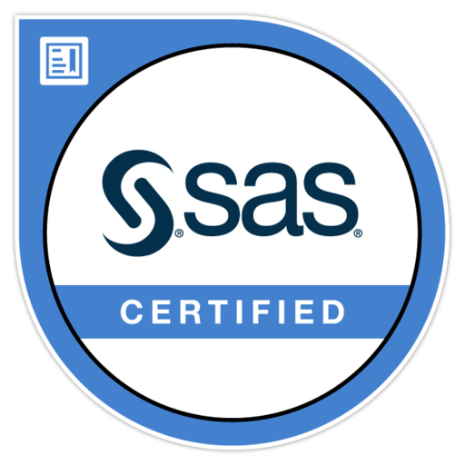

Hi, Myself
Akshit Modi
And I'm a
I am a Master's student of Biomedical Informatics and Data Science
Download CV

I’m a recent graduate in Biomedical Informatics and Data Science, bringing over three years of hands-on experience in machine learning, clinical NLP, and healthcare data engineering. With a background that blends academic research with real-world impact, I’ve built and deployed predictive models and end-to-end AI systems for leading healthcare organizations like Tempus and Innovaccer.
Programming & Data :Python, SQL, SAS, PySpark, Pandas, Git, Tableau, Matplotlib, Seaborn
Machine Learning :Scikit-learn, XGBoost, Random Forest, Bayesian Optimization, SMOTE, Weighted Loss Functions
Deep Learning :TensorFlow, DNN, LSTM, Keras, Neural Network Architectures
Natural Language Processing :Hugging Face, SpaCy, BERT, BioBERT, ClinicalBERT, Text Preprocessing, NER, Clinical NLP
Cloud Platforms & MLops: AWS(SageMaker, Lambda, Glue, Bedrock), Azure(ML, ADF, AKS), GCP, Docker, FastAPI, CI/CD
Healthcare Data Standards & Compliance: :HIPAA, SDTM, ADaM(CDISC), ICD-10, LOINC, SNOMED CT, RxNorm, NDHM, FHIR, HL7, Data Encryption, Access Control
Honros: Secured 3rd place in the Smart Gujarat Hackathon, five times employee of the month.
Leetcode Top_SQL_50
Python Gold_Badge
SAS Certified Specialist(9.4)
AWS CCP Certified
Google Data Analytics
Arizona State University, Tempe, Arizona Aug 2023-May 2025 GPA: 3.74/4.00
Capstone Project: Personalized Medicine Recommendation System.(Clinical Decesion support System)
Activities: Work as data anlyst, data cleaning and created dynamic Tableau dashboards to visualize relationships between population, county, and GeoID, make a better policy decision-making.
Gujarat Technological University, Ahmedabad, India Aug 2017-June 2021 GPA:8.32/10
Applited Project: Health Monitoring System Using IOT.
Activities: GTU Youthfest volunteer, Coordinate marathon, Quench Tech-Fest Coordination.
• Led the development of an NLP pipeline to extract key oncology clinical features from unstructured EHR notes, enabling faster downstream analytics. Collaborated with clinical and engineering teams using Python and SQL for data alignment.
• Analyzed the impact of Federally Qualified Health Center (FQHC) shortages on Medicaid enrollees’ healthcare access across Arizona counties, using structured public health datasets and statistical analysis in Excel.
• Designed an AI-powered Patient Risk Stratification System for chronic disease prediction (diabetes, COPD), collaborating with stakeholders to define KPIs and healthcare outcome benchmarks.
• Collaborated with clinical, data science, and compliance teams to define project goals. Validated multi-hospital EHR datasets using Python-based QA tools, ensuring HIPAA compliance and achieving over 98% data accuracy.

Clinical Decesion System(NLP) January 2025-May 2025
Developed a Medicine Recommendation System by analyzing over 10,000 patient demographics and lab results using XGBoost machine learning models and NLP; optimized treatment recommendations for helped healthcare across diverse cases. Processed over 1 million records from Synthea dataset. Implemented a web-based AI recommendation system utilizing Streamlit, integrating SHAP and LIME for explainability; strengthened treatment prediction accuracy by help over healthcare professionals in real-time scenarios.

Project Management Aug 2024-Dec 2024
• Delivered an AI-powered diagnostic tool, performed 15 different chest diagnoses, and developed a CNN-based multiclass multilabel classification model leveraging the CHEXPERT dataset to detect 15 chest diseases from X-ray images. • constructed a web application with MongoDB for image storage and JavaScript, HTML, and CSS for frontend, and Flask for backend development, and deployed on AWS.

End to End ML June 2024-Aug 2024
• Made a student score prediction model CatBoost, achieving 96% accuracy through data cleaning, feature engineering, and model optimization techniques.
•Built a web application Flask, HTML, and CSS to get real-time predictions, deploying it on AWS Elastic Beanstalk.
•Gained data-driven insights for student performance, supporting educational decision-making with accurate, 1-second response.

Quiime 2 Analysis January 2024-May 2024
Developed a student score prediction model using CatBoost, achieving 96% accuracy through data cleaning, feature engineering, and model optimization techniques.
Built a web application using Flask, HTML, and CSS to deliver real-time predictions, deploying it on AWS Elastic Beanstalk.
Enhanced data-driven insights for student performance, supporting educational decision-making with accurate, real-time predictions.
Arduino January 2021-May 2021
Enabled real-time remote monitoring of vital physiological parameters, improving accessibility to live health data for providers during COVID-19. Designed and developed an IoT-based system to track ECG, pulse, SPO2, and temperature, ensuring seamless data transmission. Integrated AD8232, MAX30100, and DS18B20 sensors with NodeMCU ESP8266, utilizing cloud-based third-party platforms for real-time accessibility.
Collected IMU sensor data (LSM 9DS1) using the Arduino Nano 33 BLE board to detect and classify various body positions (supine, prone, left side, and right side). The data was stored in CSV files for efficient processing and analysis. Preprocessed the collected data and trained a Convolutional Neural Network (CNN) on it, achieving an impressive 99% accuracy in body position classification. The trained model was then converted and saved as a header file (.h) to facilitate its deployment on the embedded system. Deployed the trained CNN model onto the Arduino Nano 33 BLE board, enabling real-time body position detection. The model leverages machine learning to classify positions based on live sensor data from the IMU, ensuring accurate posture detection in a resource-constrained embedded environment